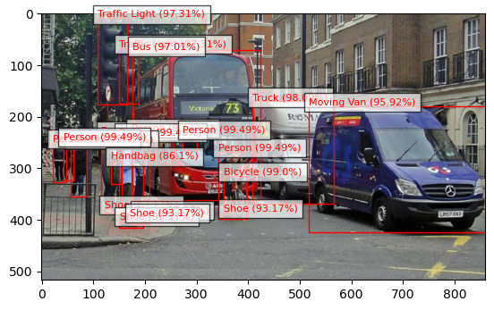
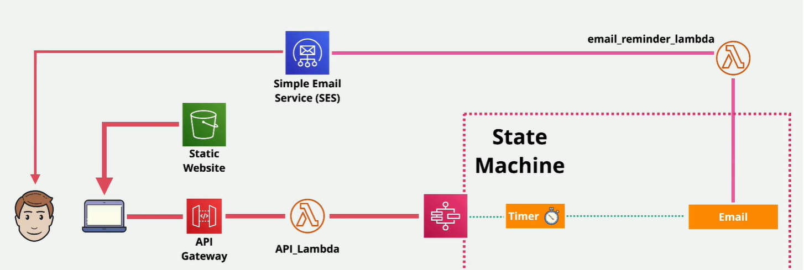
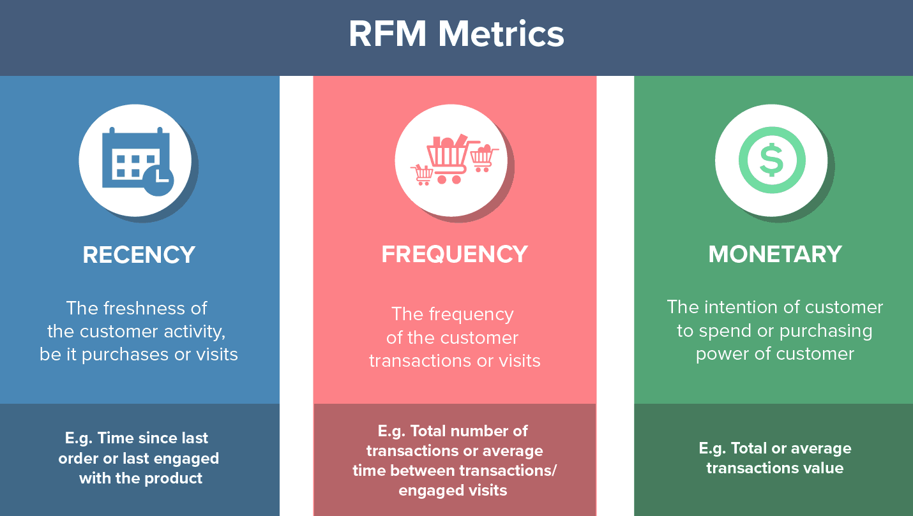

Undergraduate Research
Conducted undergraduate research focusing on applying machine learning techniques to detect and classify Fast Radio Bursts (FRBs), contributing to the field of radio astronomy. The research aimed to enhance understanding of these mysterious astrophysical phenomena through data-driven methodologies.

Simulated the 2D Ising model, a classic problem in statistical mechanics, to study phase transitions. The project involved coding a Monte Carlo algorithm to visualize how spins align based on temperature, demonstrating critical behavior in physical systems.

Leveraged AWS Rekognition to build a powerful image recognition system that detects and labels objects, scenes, and activities in images. This project highlights my proficiency in cloud-based image processing and the ability to integrate AI with AWS services for real-time data analysis.

Developed a fully serverless web application using AWS Lambda and API Gateway, showcasing my skills in building scalable, cost-effective cloud solutions without server management. Ideal for real-time user engagement and data handling.

Performed RFM (Recency, Frequency, Monetary) analysis to predict customer lifetime value using machine learning. This project demonstrates the application of predictive analytics to improve business decision-making.
Implemented a pricing optimization model using machine learning algorithms to determine the best price point for iPhone cases, maximizing revenue while maintaining competitive market positioning.

Created an automated file sorting application to enhance productivity by organizing files in the user's file explorer based on predefined criteria, such as file type and last modified date.

Explored global layoff trends by analyzing datasets to identify patterns and correlations. This project helped to visualize economic trends and informed on the factors contributing to mass layoffs.

Developed a machine learning-based recommendation system that suggests movies based on user preferences and viewing history. The project involved natural language processing and collaborative filtering techniques.